Shading
Let’s continue making our images more realistic; in this chapter, we’ll examine how to add lights to the scene and how to illuminate the objects it contains. First, let’s look at a bit of terminology.
Shading vs. Illumination
The title of this chapter is “Shading," not”Illumination"; these are two different but closely related concepts. Illumination refers to the math and algorithms necessary to compute the effect of light on a single point in the scene; shading deals with techniques that extend the effect of light on a discrete set of points to entire objects.
In Chapter 3 (Light), we looked at all we need to know about illumination. We can define ambient, point, and directional lights, and we can compute the
illumination at any point in the scene given its position and a surface normal at that point:
\[I_P = I_A + \sum_{i = 1}^{n} I_i \cdot \left[ {{{\langle \vec{N}, \vec{L_i} \rangle} \over {|\vec{N}||\vec{L_i}|}} + \left( {{\langle \vec{R_i}, \vec{V} \rangle} \over {|\vec{R_i}||\vec{V}|}} \right)^s} \right]\]
This illumination equation expresses how light illuminates a point in the scene. The way this worked in our raytracer is exactly the same way it works in our rasterizer.
The more interesting part, which we’ll explore in this chapter, is how to extend the “illumination at a point” algorithms we developed into “illumination at every point of a triangle” algorithms.
Flat Shading
Let’s start simple. Since we can compute illumination at a point, we can just pick any point in a triangle (for example, its center), compute the illumination at that point, and use it to shade the whole triangle. To do the actual shading, we can multiply the color of the triangle by the illumination value. Figure 13-1 shows the results.
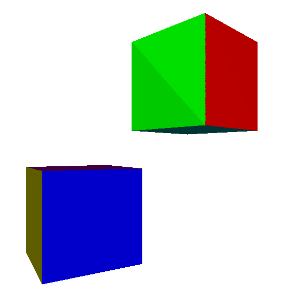
The results are promising. Every point in a triangle has the same normal, so as long as a light is reasonably far from it, the light vectors for every point are approximately parallel and every point receives approximately the same amount of light. The discontinuity between the two triangles that make up each side of the cube, especially visible on the green face in Figure 13-1, is a consequence of the light vectors being approximately, but not exactly, parallel.
So what happens if we try this technique with an object for which every point has a different normal, like the sphere in Figure 13-2?
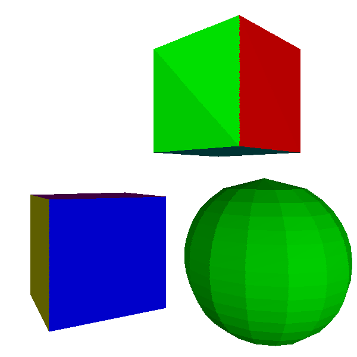
Not so good. It is very obvious that the object is not a true sphere, but an approximation made out of flat, triangular patches. Because this kind of illumination makes curved objects look flat, it’s called flat shading.
Gouraud Shading
How can we remove these discontinuities in lighting? Instead of computing illumination only at the center of a triangle, we can compute illumination at its three vertices. This gives us three illumination values between \(0.0\) and \(1.0\), one for each vertex of the triangle. This puts us in exactly the same situation as Chapter 8 (Shaded Triangles): we can use DrawShadedTriangle directly, using the illumination values as the “intensity” attribute.
This technique is called Gouraud shading, after Henri Gouraud, who came up with the idea in 1971. Figure 13-3 shows the results of applying it to the cube and the sphere.
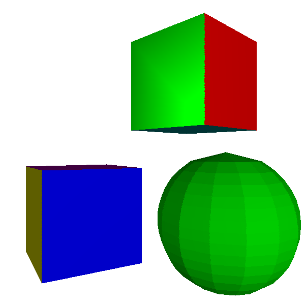
The cube looks better: the discontinuity is gone, because both triangles of each face share two vertices and they have the same normal, so the illumination at these two vertices is identical for both triangles.
The sphere, however, still looks faceted, and the discontinuities on its surface look really wrong. This shouldn’t be surprising: we’re treating the sphere as a collection of flat surfaces. In particular, despite every triangle sharing vertices with its neighboring triangles, they have different normals. Figure 13-4 shows the problem.
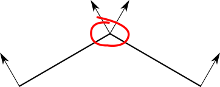
Let’s take a step back. The fact that we’re using flat triangles to represent a curved object is a limitation of our techniques, not a property of the object itself.
Each vertex in the sphere model corresponds to a point on the sphere, but the triangles they define are just an approximation of its surface. It would be a good idea to make the vertices in the model represent the points in the sphere as closely as possible. That means, among other things, using the actual sphere normals for each vertex, as shown in Figure 13-5.
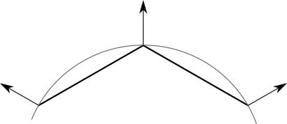
Note that this doesn’t apply to the cube; even though triangles share vertex positions, each face needs to be shaded independently of the others. There’s no single “correct” normal for the vertices of a cube.
Our renderer has no way to know whether a model is supposed to be an approximation of a curved object or the exact representation of a flat one. After all, a cube is a very crude approximation of a sphere! To solve this, we’ll make the triangle normals part of the model, so its designer can make this decision.
Some objects, like the sphere, have a single normal per vertex. Other objects, like the cube, have a different normal for each triangle that uses the vertex. So we can’t make the normals a property of the vertices; they need to be a property of the triangles that use them:
model {
name = cube
vertices {
0 = (-1, -1, -1)
1 = (-1, -1, 1)
2 = (-1, 1, 1)
...
}
triangles {
0 = {
vertices = [0, 1, 2]
normals = [(-1, 0, 0), (-1, 0, 0), (-1, 0, 0)]
}
...
}
}
Figure 13-6 shows the scene rendered using Gouraud shading and the appropriate vertex normals.
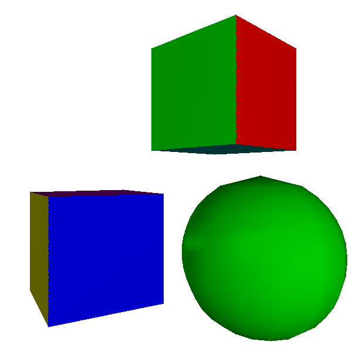
The cubes still look like cubes, and the sphere now looks remarkably like a sphere. In fact, you can only tell it’s made out of triangles by looking at its outline. This could be improved by using more, smaller triangles, at the expense of requiring more computing power.
Gouraud shading starts breaking down when we try to render shiny objects, though; the specular highlight on the sphere is decidedly unrealistic.
This is an indication of a more general problem. When we move a point light very close to a big face, we’d naturally expect it to look brighter and the specular effects to become more pronounced; however, Gouraud shading produces the exact opposite (Figure 13-7).
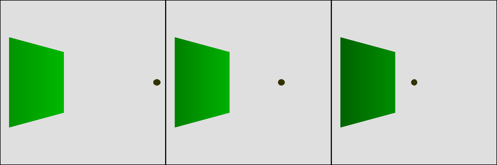
We expect points near the center of the triangle to receive a lot of light, because \(\vec{L}\) and \(\vec{N}\) are roughly parallel. However, we’re not computing lighting at the center of the triangle, but at its vertices. There, the closer the light is to the surface, the bigger the angle with the normal, so they receive little illumination. This means that every interior pixel will end up with an intensity value that is the result of interpolating between two small values, which is also a low value, as shown in Figure 13-8.
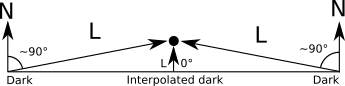
So, what to do?
Phong Shading
We can overcome the limitations of Gouraud shading, but as usual, there’s a trade-off between quality and resource usage.
Flat shading involved a single illumination calculation per triangle. Gouraud shading requires three illumination calculations per triangle, plus the interpolation of a single attribute, the illumination, across the triangle. The next step in quality requires us to calculate illumination at every pixel of the triangle.
This doesn’t sound particularly complex from a theoretical point of view; we’re computing lighting at one or three points already, and we were computing per-pixel lighting for the raytracer after all. What’s tricky here is figuring out where the inputs to the illumination equation come from. Recall that the full illumination equation, with ambient, diffuse, and specular components, is:
\[I_P = I_A + \sum_{i = 1}^{n} I_i \left({{\langle \vec{N}, \vec{L_i} \rangle} \over {|\vec{N}||\vec{L_i}|}} + \left( {{\langle \vec{R}, \vec{V} \rangle} \over {|\vec{R}||\vec{V}|}} \right)^s\right)\]
First, we need \(\vec{L}\). For directional lights, \(\vec{L}\) is given. For point lights, \(\vec{L}\) is defined as the vector from the point in the scene, \(P\), to the position of the light, \(Q\). However, we don’t have \(P\) for every pixel of the triangle, but only for the vertices.
What we do have is the projection of \(P\); that is, the \(x'\) and \(y'\) we’re about to draw on the canvas! We know that
\[x' = {xd \over z}\]
\[y' = {yd \over z}\]
We also happen to have an interpolated but geometrically correct value for \(1 \over z\) as part of the depth-buffering algorithm, so
\[x' = xd{1 \over z}\]
\[y' = yd{1 \over z}\]
We can recover \(P\) from these values:
\[x = {x' \over d{1 \over z}}\]
\[y = {y' \over d{1 \over z}}\]
\[z = {1 \over {1 \over z}}\]
We also need \(\vec{V}\). This is the vector from the camera (which we know) to \(P\) (which we just computed), so \(\vec{V}\) is simply \(P - C\).
Next, we need \(\vec{N}\). We only know the normals at the vertices of the triangle. When all you have is a hammer, every problem looks like a nail; our hammer is—you probably guessed it—linear interpolation of attribute values. So let’s take the values of \(N_x\), \(N_y\), and \(N_z\) at each vertex and treat each of them as an attribute we can linearly interpolate. Then, at every pixel, we reassemble the interpolated components into a vector, normalize it, and use it as the normal at that pixel.
This technique is called Phong shading, after Bui Tuong Phong, who invented it in 1973. Figure 13-9 shows the results.
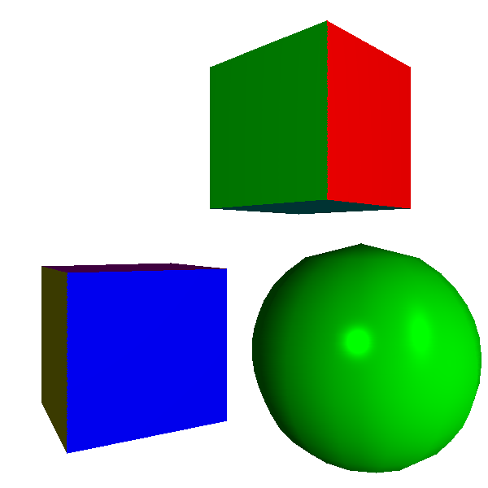
The sphere looks much better now. Its surface displays the proper curvature, and the specular highlights look well defined. The contour, however, still betrays the fact that we’re rendering an approximation made of triangles. This is not a shortcoming of the shading algorithm, which only determines the color of each pixel of the surface of the triangles but has no control over the shape of the triangles themselves. This sphere approximation uses 420 triangles; we could get a smoother contour by using more triangles, at the cost of worse performance.
Phong shading also solves the problem with the light getting close to a face, now giving the expected results (Figure 13-10).
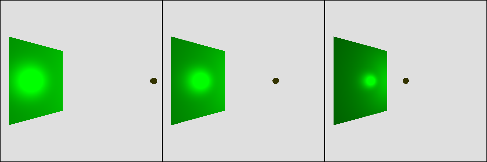
At this point, we’ve matched the capabilities of the raytracer developed in Part I, except for shadows and reflections. Using the exact same scene definition, Figure 13-11 shows the output of the rasterizer we’re developing.
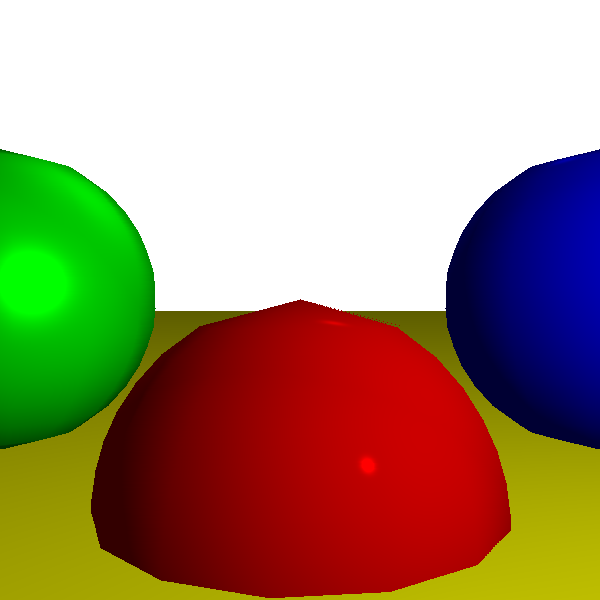
For reference, Figure 13-12 shows the raytraced version of the same scene.

The two versions look almost identical, despite using vastly different techniques. This is expected, since the scene definition is identical. The only visible difference can be found in the contour of the spheres: the raytracer renders them as mathematically perfect objects, but we use an approximation made of triangles for the rasterizer.
Another difference is the performance of the two renderers. This is very hardware- and implementation-dependent, but generally speaking, rasterizers can produce full-screen images of complex scenes up to 60 times per second or more, which makes them suitable for interactive applications such as videogames, while raytracers may take multiple seconds to render the same scene once. This difference might tend to disappear in the future; advances in hardware in recent years are making raytracer performance much more competitive with that of rasterizers.
Summary
In this chapter, we added illumination to our rasterizer. The illumination equation we use is exactly the same as the one in Chapter 3 (Light), because we’re using the same lighting model. However, where the raytracer computed the illumination equation at each pixel, our rasterizer can support a variety of different techniques to achieve a specific trade-off between performance and image quality.
The fastest shading algorithm, which also produces the least appealing results, is flat shading: we compute the illumination of a single point in a triangle and use it for every pixel in that triangle. This results in a very faceted appearance, especially for objects that approximate curved surfaces such as spheres.
One step up the quality ladder, we have Gouraud shading: we compute the illumination of the three vertices of a triangle and then interpolate this value across the face of the triangle. This gives objects a smoother appearance, including curved objects. However, this technique fails to capture more subtle lighting effects, such as specular highlights.
Finally, we studied Phong shading. Much like our raytracer, it computes the illumination equation at every pixel, producing the best results and also the worst performance. The trick in Phong shading is knowing how to compute all the necessary values to evaluate the illumination equation; once again, the answer is linear interpolation—in this case, of normal vectors.
In the next chapter, we’ll add even more detail to the surface of our triangles, using a technique that we haven’t studied for the raytracer: texture mapping.